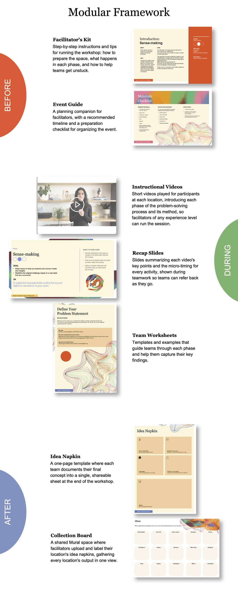

How might we activate Steelcase's global network to tackle pressing social and environmental issues, and build problem-solving capabilities across the company?
I conceptualized, designed, and led the Better Is Possible Design Challenge, a global innovation program that brought Steelcase's employees, clients, and nonprofit partners together to tackle social and environmental challenges. I ran it end to end, from concept and design through pilot, evaluation, and organizational rollout, leading a cross-functional team that ranged from PR to local facilitators across every level of seniority.
Through a train-the-trainer program, I prepared a global team of facilitators to run the workshop in their own offices. I built them a modular framework, including a toolkit, an event guide, instructional videos, and feedback loops, designed to keep the experience consistent worldwide while leaving room for local adaptation.
Within two months of joining the company, I rallied 10 facilitator teams for the pilot, from Shanghai and Sydney to Grand Rapids and Monterrey, then scaled the program to 15 cities within a year, reaching more than 300 participants. It remains a flagship program today.
